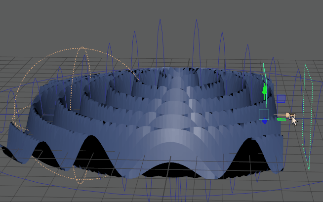

比较：具有弯曲变形器的平面和具有基本体衰减效果的同一几何体
可以在任何变形的几何体上创建衰减（或值）渐变效果。
“基本体”(Primitive)、“均匀”(Uniform)和“组件”(Component)衰减类型可用于定义变形的效果，而“融合”(Blend)和“传递”(Transfer)衰减允许您同时管理多个衰减类型。
注： 使用衰减和渐变时，请记住，渐变形状表示对变形效果的衰减影响。
 渐变之前和之后的值与渐变的开始值和结束值保持相等。例如，当渐变值从 0.3 开始时，Maya 假定在渐变效果之前出现的几何体处于 0.3。
渐变之前和之后的值与渐变的开始值和结束值保持相等。例如，当渐变值从 0.3 开始时，Maya 假定在渐变效果之前出现的几何体处于 0.3。
属性编辑器：衰减渐变
标记了组件的几何体上的衰减
可以将衰减（或值）渐变属性指定给任何指定给几何体的“组件标记”(Component Tag)成员身份。使用“组件标记”(Component Tag)为变形效果指定衰减值时，可以保存衰减供以后使用，也可以在工作时编辑它们。
若要为对象创建“组件标记”(Component Tag)，请参见为几何体指定组件标记。
注： 通过在“属性编辑器”(Attriubute Editor)中关闭“中间对象”(Intermediate Object)，组件标记可用于查看原始几何体，即几何体在变形之前的状态。请参见原始几何体主题中的显示原始几何体。
变形器衰减类型
在“属性编辑器”(Attribute Editor) 的“<变形器名称>”选项卡的“输入属性”(Input Attributes)构件中，可以为变形选择几种不同的衰减方法。请参见创建变形器衰减。
注： 如果“变形器属性”(Deformer Attributes)区域灰显，则选定变形器不支持衰减。
- 基本体衰减(Primitive Falloff)
-

基本体衰减：使用球体或平面衰减对象
- 使用平面或球形衰减对象定义一个区域以计算变形的值渐变。若要使用基本体衰减，请参见创建变形器衰减主题中的基本体衰减：使用衰减对象控制效果。
- 均匀衰减(Uniform Falloff)
- 当要在整个几何体中平均减弱或增加变形器的效果时，请使用此衰减。
- 可以在“属性编辑器”(Attribute Editor)的“均匀衰减”(Uniform Falloff)选项卡中修改均匀衰减效果。（位于“附加属性”(Extra Attributes)构件的“均匀权重”(Uniform Weight)字段中。）
注： 权重值为 1.00 表示 100% 变形（即，无衰减效果），权重值为 0 将消除任何变形效果。将该值增加到超过 1.0 将放大变形。
- 若要使用均匀衰减，请参见创建变形器衰减主题中的均匀衰减：创建一致的衰减效果”。
- 融合衰减(Blend Falloff)
-

两个基本体衰减互相融合
- 使用融合衰减将不同的衰减类型混合在一起；可以嵌套衰减效果。可以对每个衰减效果执行相乘、相除、相加、相减、最大化、覆盖和设置关键帧，以创建自定义融合，即组合“属性编辑器”(Attribute Editor)中的“融合衰减”(Blend Falloff)构件的表中的衰减效果。
- 若要使用融合衰减，请参见创建变形器衰减主题中的融合衰减：混合变形器权重。
- 接近度衰减(Proximity Falloff)
-
接近度衰减：使用几何体作为衰减对象
- “接近度衰减”(Proximity Falloff)允许使用与几何体的接近度这一方法来创建衰减效果。“接近度衰减”(Proximity Falloff)类似于“基本体衰减”(Primitive Falloff)，只是它不使用平面或球形衰减对象，您可以指定自定义几何体。若要使用“接近度衰减”(Proximity Falloff)，请参见创建变形器衰减主题中的接近度衰减：使用自定义几何体控制效果。
-
注： 与其他变形器衰减类型不同，您必须在节点编辑器(Node Editor)中连接几何体。
- 子集衰减(Subset Falloff)
-
子集衰减：应用于组件标记的变形
- 仅将变形效果应用于特定的“组件标记”(Component Tags)。上面的示例显示了应用于以下三个不同组件标记分组的簇变形：Top_Vertices、Middle_Edges 和 Left_Faces。
- 若要使用子集衰减，请参见创建变形器衰减主题中的子集衰减：限制对组件标记的衰减。
- 组件衰减(Component Falloff)
-
组件衰减：绘制变形权重
- 使用每组件值表。这类似于传统的权重绘制工作流，因为它使用存储的绘制值。若要使用组件衰减，请参见创建变形器衰减主题中的组件衰减：绘制变形器权重。
- 传递衰减(Transfer Falloff)
- 使用此衰减类型可以将衰减权重从一个变形器组件传递到另一个变形器组件。
- 若要使用传递衰减，请参见创建变形器衰减主题中的“传递衰减：重用衰减权重”。
支持衰减的变形器列表
目前，并非所有变形器都支持衰减行为。
以下是支持衰减的变形器列表
- 固化(Solidify)
- 接近度包裹(Proximity Wrap)
- 张力(Tension)
- 晶格(Lattice)
- 线条(Wire)
- Delta Mush
- 所有非线性
- 簇(Cluster)
- 融合变形
已知限制
GPU 当前不支持衰减。